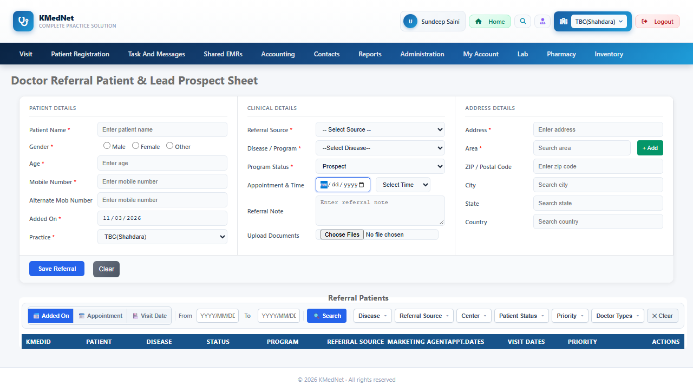
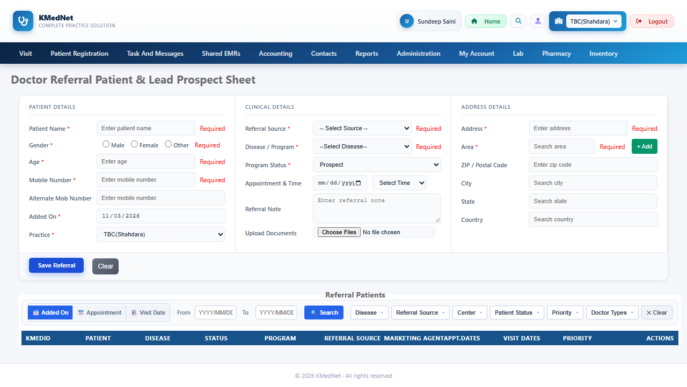
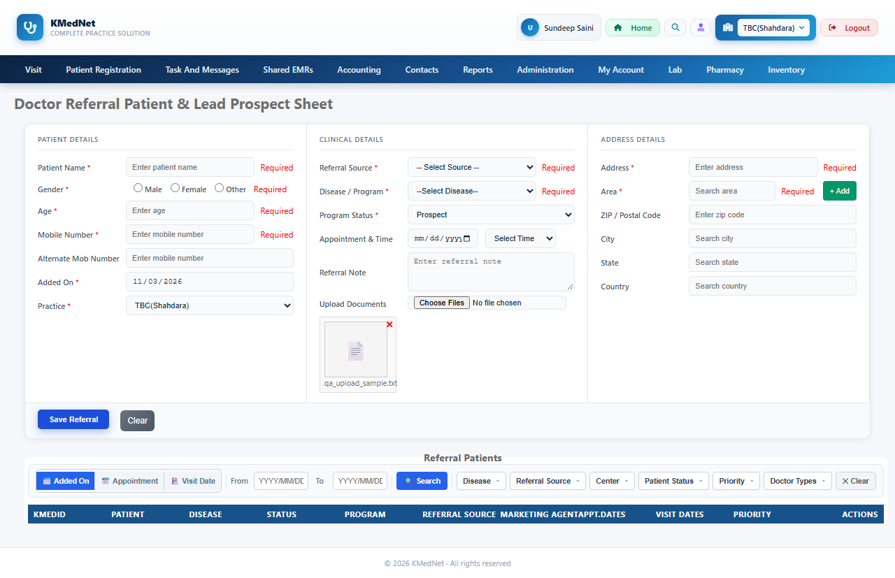
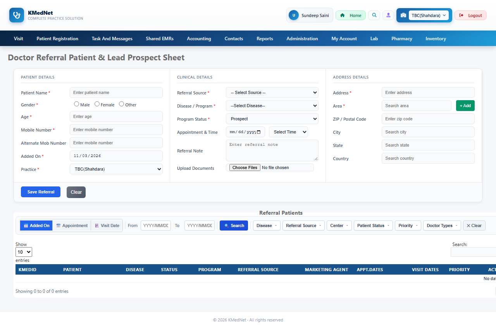

Total62
App defect6
Script error7
Skipped7
Passed42
App defect The app did not do what its own validators/code say it should. Investigate the application.
Script error The test could not perform a step (element missing, hidden or disabled). The test needs healing, not the app.
Skipped Not executed.
Generation notes (111)
- Rejected suggestion: "Submit form with empty patient name" - validator_fires 'rfvPatientName': field 'txtTeamMember' is still empty, and its own required validator 'rfvTeamMember' is in the same group - that will likely fire/show first and hide 'rfvPatientName'. Fill 'txtTeamMember' with valid data first, so 'rfvPatientName' is the only thing left wrong on the page.; (model was asked to fix this; see accepted scenarios for its replacement)
- Rejected suggestion: "Submit form with empty patient name" - step 9: 'txtTeamMember' is hidden when the page loads - click the control that reveals it first; validator_fires 'rfvPatientName': field 'txtTeamMember' is still empty, and its own required validator 'rfvTeamMember' is in the same group - that will likely fire/show first and hide 'rfvPatientName'. Fill 'txtTeamMember' with valid data first, so 'rfvPatientName' is the only thing left wrong on the page.
- Rejected suggestion: "Enter age below minimum range" - validator_fires 'rvAge': field 'txtPatientName' is still empty, and its own required validator 'rfvPatientName' is in the same group - that will likely fire/show first and hide 'rvAge'. Fill 'txtPatientName' with valid data first, so 'rvAge' is the only thing left wrong on the page.; (model was asked to fix this; see accepted scenarios for its replacement)
- Rejected suggestion: "Enter age above maximum range" - validator_fires 'rvAge': field 'txtPatientName' is still empty, and its own required validator 'rfvPatientName' is in the same group - that will likely fire/show first and hide 'rvAge'. Fill 'txtPatientName' with valid data first, so 'rvAge' is the only thing left wrong on the page.; (model was asked to fix this; see accepted scenarios for its replacement)
- Rejected suggestion: "Leave age field empty" - validator_fires 'rfvAge': field 'txtPatientName' is still empty, and its own required validator 'rfvPatientName' is in the same group - that will likely fire/show first and hide 'rfvAge'. Fill 'txtPatientName' with valid data first, so 'rfvAge' is the only thing left wrong on the page.; (model was asked to fix this; see accepted scenarios for its replacement)
- Rejected suggestion: "Enter age below minimum range" - validator_fires 'rvAge': field 'txtMob' is still empty, and its own required validator 'rfvMobile' is in the same group - that will likely fire/show first and hide 'rvAge'. Fill 'txtMob' with valid data first, so 'rvAge' is the only thing left wrong on the page.
- Rejected suggestion: "Enter age above maximum range" - validator_fires 'rvAge': field 'txtMob' is still empty, and its own required validator 'rfvMobile' is in the same group - that will likely fire/show first and hide 'rvAge'. Fill 'txtMob' with valid data first, so 'rvAge' is the only thing left wrong on the page.
- Rejected suggestion: "Leave age field empty" - validator_fires 'rfvAge': field 'txtMob' is still empty, and its own required validator 'rfvMobile' is in the same group - that will likely fire/show first and hide 'rfvAge'. Fill 'txtMob' with valid data first, so 'rfvAge' is the only thing left wrong on the page.
- Rejected suggestion: "Valid mobile number input" - validator_passes 'revMobile': no button is clicked, so validation never runs; (model was asked to fix this; see accepted scenarios for its replacement)
- Rejected suggestion: "Empty mobile number input" - validator_fires 'rfvMobile': field 'txtAge' is still empty, and its own required validator 'rfvAge' is in the same group - that will likely fire/show first and hide 'rfvMobile'. Fill 'txtAge' with valid data first, so 'rfvMobile' is the only thing left wrong on the page.; (model was asked to fix this; see accepted scenarios for its replacement)
- Rejected suggestion: "Invalid mobile number input (less than 10 digits)" - validator_fires 'revMobile': field 'txtPatientName' is still empty, and its own required validator 'rfvPatientName' is in the same group - that will likely fire/show first and hide 'revMobile'. Fill 'txtPatientName' with valid data first, so 'revMobile' is the only thing left wrong on the page.; (model was asked to fix this; see accepted scenarios for its replacement)
- Rejected suggestion: "Boundary test for mobile number input (10 digits)" - validator_passes 'revMobile': no button is clicked, so validation never runs; (model was asked to fix this; see accepted scenarios for its replacement)
- Rejected suggestion: "Empty mobile number input" - validator_fires 'rfvMobile': field 'txtTeamMember' is still empty, and its own required validator 'rfvTeamMember' is in the same group - that will likely fire/show first and hide 'rfvMobile'. Fill 'txtTeamMember' with valid data first, so 'rfvMobile' is the only thing left wrong on the page.
- Rejected suggestion: "Invalid mobile number input (less than 10 digits)" - validator_fires 'revMobile': field 'txtTeamMember' is still empty, and its own required validator 'rfvTeamMember' is in the same group - that will likely fire/show first and hide 'revMobile'. Fill 'txtTeamMember' with valid data first, so 'revMobile' is the only thing left wrong on the page.
- Rejected suggestion: "Valid mobile number input" - validator_passes 'RegularExpressionValidator1': no button is clicked, so validation never runs; (model was asked to fix this; see accepted scenarios for its replacement)
- Rejected suggestion: "Invalid mobile number input (less than 10 digits)" - validator_fires 'RegularExpressionValidator1': field 'txtPatientName' is still empty, and its own required validator 'rfvPatientName' is in the same group - that will likely fire/show first and hide 'RegularExpressionValidator1'. Fill 'txtPatientName' with valid data first, so 'RegularExpressionValidator1' is the only thing left wrong on the page.; (model was asked to fix this; see accepted scenarios for its replacement)
- Rejected suggestion: "Invalid mobile number input (more than 10 digits)" - validator_fires 'RegularExpressionValidator1': field 'txtPatientName' is still empty, and its own required validator 'rfvPatientName' is in the same group - that will likely fire/show first and hide 'RegularExpressionValidator1'. Fill 'txtPatientName' with valid data first, so 'RegularExpressionValidator1' is the only thing left wrong on the page.; (model was asked to fix this; see accepted scenarios for its replacement)
- Rejected suggestion: "Boundary case: exactly 10 digits" - validator_passes 'RegularExpressionValidator1': no button is clicked, so validation never runs; (model was asked to fix this; see accepted scenarios for its replacement)
- Rejected suggestion: "Invalid mobile number input (less than 10 digits)" - validator_fires 'RegularExpressionValidator1': field 'txtAge' is still empty, and its own required validator 'rfvAge' is in the same group - that will likely fire/show first and hide 'RegularExpressionValidator1'. Fill 'txtAge' with valid data first, so 'RegularExpressionValidator1' is the only thing left wrong on the page.
- Rejected suggestion: "Invalid mobile number input (more than 10 digits)" - validator_fires 'RegularExpressionValidator1': field 'txtAge' is still empty, and its own required validator 'rfvAge' is in the same group - that will likely fire/show first and hide 'RegularExpressionValidator1'. Fill 'txtAge' with valid data first, so 'RegularExpressionValidator1' is the only thing left wrong on the page.
- Rejected suggestion: "Verify 'Added On' field is pre-filled with today's date" - scenario has no steps; (model was asked to fix this; see accepted scenarios for its replacement)
- Rejected suggestion: "Verify 'Added On' field is read-only" - scenario has no steps; (model was asked to fix this; see accepted scenarios for its replacement)
- Rejected suggestion: "Verify 'Added On' field is pre-filled with today's date" - scenario has no steps
- Rejected suggestion: "Verify 'Added On' field is read-only" - scenario has no steps
- Rejected suggestion: "Attempt to select an invalid practice option" - step 1: option 'Invalid Option' is not in 'ddlPractice'. Real options: ['TBC(Shahdara)']; (model was asked to fix this; see accepted scenarios for its replacement)
- Rejected suggestion: "Check default practice selection" - scenario has no steps; (model was asked to fix this; see accepted scenarios for its replacement)
- Rejected suggestion: "Check default practice selection" - scenario has no steps
- Rejected suggestion: "Select the default referral source option" - validator_fires 'rfvReferralSource': field 'txtAge' is still empty, and its own required validator 'rfvAge' is in the same group - that will likely fire/show first and hide 'rfvReferralSource'. Fill 'txtAge' with valid data first, so 'rfvReferralSource' is the only thing left wrong on the page.; (model was asked to fix this; see accepted scenarios for its replacement)
- Rejected suggestion: "Select the default referral source option" - validator_fires 'rfvReferralSource': field 'txtMob' is still empty, and its own required validator 'rfvMobile' is in the same group - that will likely fire/show first and hide 'rfvReferralSource'. Fill 'txtMob' with valid data first, so 'rfvReferralSource' is the only thing left wrong on the page.
- Rejected suggestion: "Select the default option for disease/program" - validator_fires 'rfvDisease': field 'txtPatientName' is still empty, and its own required validator 'rfvPatientName' is in the same group - that will likely fire/show first and hide 'rfvDisease'. Fill 'txtPatientName' with valid data first, so 'rfvDisease' is the only thing left wrong on the page.; (model was asked to fix this; see accepted scenarios for its replacement)
- Rejected suggestion: "Select the default option for disease/program" - validator_fires 'rfvDisease': field 'txtAge' is still empty, and its own required validator 'rfvAge' is in the same group - that will likely fire/show first and hide 'rfvDisease'. Fill 'txtAge' with valid data first, so 'rfvDisease' is the only thing left wrong on the page.
- Rejected suggestion: "Select the default option in program status" - validator_fires 'rfvPatientStatus': field 'txtPatientName' is still empty, and its own required validator 'rfvPatientName' is in the same group - that will likely fire/show first and hide 'rfvPatientStatus'. Fill 'txtPatientName' with valid data first, so 'rfvPatientStatus' is the only thing left wrong on the page.; (model was asked to fix this; see accepted scenarios for its replacement)
- Rejected suggestion: "Select the default option in program status" - validator_fires 'rfvPatientStatus': field 'txtAge' is still empty, and its own required validator 'rfvAge' is in the same group - that will likely fire/show first and hide 'rfvPatientStatus'. Fill 'txtAge' with valid data first, so 'rfvPatientStatus' is the only thing left wrong on the page.
- Rejected suggestion: "Leave address field empty" - validator_fires 'rfvAddress': field 'txtAge' is still empty, and its own required validator 'rfvAge' is in the same group - that will likely fire/show first and hide 'rfvAddress'. Fill 'txtAge' with valid data first, so 'rfvAddress' is the only thing left wrong on the page.; (model was asked to fix this; see accepted scenarios for its replacement)
- Rejected suggestion: "Leave address field empty" - validator_fires 'rfvAddress': field 'txtTeamMember' is still empty, and its own required validator 'rfvTeamMember' is in the same group - that will likely fire/show first and hide 'rfvAddress'. Fill 'txtTeamMember' with valid data first, so 'rfvAddress' is the only thing left wrong on the page.
- Rejected suggestion: "Negative scenario: Empty 'Search area' field triggers required validator" - validator_fires 'rfvArea': field 'txtTeamMember' is still empty, and its own required validator 'rfvTeamMember' is in the same group - that will likely fire/show first and hide 'rfvArea'. Fill 'txtTeamMember' with valid data first, so 'rfvArea' is the only thing left wrong on the page.; (model was asked to fix this; see accepted scenarios for its replacement)
- Rejected suggestion: "Negative scenario: Empty 'Search area' field triggers required validator" - step 10: 'txtTeamMember' is hidden when the page loads - click the control that reveals it first; validator_fires 'rfvArea': field 'txtTeamMember' is still empty, and its own required validator 'rfvTeamMember' is in the same group - that will likely fire/show first and hide 'rfvArea'. Fill 'txtTeamMember' with valid data first, so 'rfvArea' is the only thing left wrong on the page.
- Rejected suggestion: "Positive test for valid date format in 'YYYY/MM/DD' field" - step 1: 'filterFromDate' is disabled/read-only; (model was asked to fix this; see accepted scenarios for its replacement)
- Rejected suggestion: "Negative test for invalid date format in 'YYYY/MM/DD' field" - step 1: 'filterFromDate' is disabled/read-only; (model was asked to fix this; see accepted scenarios for its replacement)
- Rejected suggestion: "Boundary test for earliest valid date in 'YYYY/MM/DD' field" - step 1: 'filterFromDate' is disabled/read-only; (model was asked to fix this; see accepted scenarios for its replacement)
- Rejected suggestion: "Boundary test for latest valid date in 'YYYY/MM/DD' field" - step 1: 'filterFromDate' is disabled/read-only; (model was asked to fix this; see accepted scenarios for its replacement)
- Rejected suggestion: "Negative test for missing patient name" - validator_fires 'rfvPatientName': field 'txtTeamMember' is still empty, and its own required validator 'rfvTeamMember' is in the same group - that will likely fire/show first and hide 'rfvPatientName'. Fill 'txtTeamMember' with valid data first, so 'rfvPatientName' is the only thing left wrong on the page.
- Rejected suggestion: "Boundary test for mobile number length" - validator_fires 'revMobile': field 'txtTeamMember' is still empty, and its own required validator 'rfvTeamMember' is in the same group - that will likely fire/show first and hide 'revMobile'. Fill 'txtTeamMember' with valid data first, so 'revMobile' is the only thing left wrong on the page.
- Rejected suggestion: "Valid date format for 'filterToDate'" - step 1: 'filterToDate' is disabled/read-only; (model was asked to fix this; see accepted scenarios for its replacement)
- Rejected suggestion: "Invalid date format for 'filterToDate'" - step 1: 'filterToDate' is disabled/read-only; (model was asked to fix this; see accepted scenarios for its replacement)
- Rejected suggestion: "Empty 'filterToDate' field" - step 1: 'filterToDate' is disabled/read-only; (model was asked to fix this; see accepted scenarios for its replacement)
- Rejected suggestion: "Boundary test for 'filterToDate' with future date" - step 1: 'filterToDate' is disabled/read-only; (model was asked to fix this; see accepted scenarios for its replacement)
- Rejected suggestion: "Required field validation for 'txtPatientName'" - validator_fires 'rfvPatientName': field 'txtTeamMember' is still empty, and its own required validator 'rfvTeamMember' is in the same group - that will likely fire/show first and hide 'rfvPatientName'. Fill 'txtTeamMember' with valid data first, so 'rfvPatientName' is the only thing left wrong on the page.
- Rejected suggestion: "Regex validation for 'txtMob' with invalid mobile number" - validator_fires 'revMobile': field 'txtTeamMember' is still empty, and its own required validator 'rfvTeamMember' is in the same group - that will likely fire/show first and hide 'revMobile'. Fill 'txtTeamMember' with valid data first, so 'revMobile' is the only thing left wrong on the page.
- Rejected suggestion: "Save Referral with all required fields filled correctly" - step 1: unknown action 'None'; step 2: unknown action 'None'
- Rejected suggestion: "Save Referral with missing Patient Name" - step 1: unknown action 'None'; step 2: unknown action 'None'
- Rejected suggestion: "Save Referral with missing Patient Name" - validator_fires 'rfvPatientName': field 'txtTeamMember' is still empty, and its own required validator 'rfvTeamMember' is in the same group - that will likely fire/show first and hide 'rfvPatientName'. Fill 'txtTeamMember' with valid data first, so 'rfvPatientName' is the only thing left wrong on the page.
- TC_DRE_076: no provable expected result - runs as a smoke test (no crash / server error)
- TC_DRE_076: steps healed after: Step 8 'select 'On Program' in 'Program Status' (ddlPatientStatus)': element did not become visible/enabled within 10s.
- TC_DRE_076: steps healed after: Step 9 'select 'On Program' in 'Program Status' (ddlPatientStatus)': element did not become visible/enabled within 10s.
- TC_DRE_078: steps healed after: Step 8 'select 'On Program' in 'Program Status' (ddlPatientStatus)': element did not become visible/enabled within 10s.
- TC_DRE_078: steps healed after: Step 9 'select 'On Program' in 'Program Status' (ddlPatientStatus)': element did not become visible/enabled within 10s.
- TC_DRE_079: steps healed after: Step 8 'select 'On Program' in 'Program Status' (ddlPatientStatus)': element did not become visible/enabled within 10s.
- TC_DRE_079: steps healed after: Step 9 'select 'On Program' in 'Program Status' (ddlPatientStatus)': element did not become visible/enabled within 10s.
- TC_DRE_090: steps healed after: Step 2 'select 'On Program' in 'Program Status' (ddlPatientStatus)': element did not become visible/enabled within 10s.
- TC_DRE_090: steps healed after: Step 2 'select 'On Program' in 'Program Status' (ddlPatientStatus)': element did not become visible/enabled within 10s.
- TC_DRE_091: steps healed after: Step 2 'select 'Died' in 'Program Status' (ddlPatientStatus)': element did not become visible/enabled within 10s.
- TC_DRE_091: steps healed after: Step 2 'select 'Died' in 'Program Status' (ddlPatientStatus)': element did not become visible/enabled within 10s.
- TC_DRE_092: steps healed after: Step 2 'select 'Cured' in 'Program Status' (ddlPatientStatus)': element did not become visible/enabled within 10s.
- TC_DRE_092: steps healed after: Step 2 'select 'Cured' in 'Program Status' (ddlPatientStatus)': element did not become visible/enabled within 10s.
- TC_DRE_093: no provable expected result - runs as a smoke test (no crash / server error)
- TC_DRE_096: steps healed after: Step 2 'fill 'Appointment & Time' (txtFollowUpDate) with '11/03/2024'': Locator.fill: Error: Malformed value
- TC_DRE_101: no provable expected result - runs as a smoke test (no crash / server error)
- TC_DRE_102: no provable expected result - runs as a smoke test (no crash / server error)
- TC_DRE_103: no provable expected result - runs as a smoke test (no crash / server error)
- TC_DRE_104: no provable expected result - runs as a smoke test (no crash / server error)
- TC_DRE_105: no provable expected result - runs as a smoke test (no crash / server error)
- TC_DRE_108: no provable expected result - runs as a smoke test (no crash / server error)
- TC_DRE_109: no provable expected result - runs as a smoke test (no crash / server error)
- TC_DRE_110: no provable expected result - runs as a smoke test (no crash / server error)
- TC_DRE_111: no provable expected result - runs as a smoke test (no crash / server error)
- TC_DRE_112: no provable expected result - runs as a smoke test (no crash / server error)
- TC_DRE_113: no provable expected result - runs as a smoke test (no crash / server error)
- TC_DRE_114: no provable expected result - runs as a smoke test (no crash / server error)
- TC_DRE_115: no provable expected result - runs as a smoke test (no crash / server error)
- TC_DRE_116: no provable expected result - runs as a smoke test (no crash / server error)
- TC_DRE_117: no provable expected result - runs as a smoke test (no crash / server error)
- TC_DRE_118: no provable expected result - runs as a smoke test (no crash / server error)
- TC_DRE_119: no provable expected result - runs as a smoke test (no crash / server error)
- TC_DRE_120: no provable expected result - runs as a smoke test (no crash / server error)
- TC_DRE_121: no provable expected result - runs as a smoke test (no crash / server error)
- TC_DRE_122: no provable expected result - runs as a smoke test (no crash / server error)
- TC_DRE_123: no provable expected result - runs as a smoke test (no crash / server error)
- TC_DRE_125: no provable expected result - runs as a smoke test (no crash / server error)
- TC_DRE_126: no provable expected result - runs as a smoke test (no crash / server error)
- TC_DRE_127: no provable expected result - runs as a smoke test (no crash / server error)
- TC_DRE_128: no provable expected result - runs as a smoke test (no crash / server error)
- TC_DRE_129: no provable expected result - runs as a smoke test (no crash / server error)
- TC_DRE_130: no provable expected result - runs as a smoke test (no crash / server error)
- TC_DRE_134: steps healed after: Step 9 'select 'On Program' in 'Program Status' (ddlPatientStatus)': element did not become visible/enabled within 10s.
- TC_DRE_134: steps healed after: Step 10 'select 'On Program' in 'Program Status' (ddlPatientStatus)': element did not become visible/enabled within 10s.
- Healing: TC_DRE_076 (round 1): steps rewritten
- Healing: TC_DRE_078 (round 1): steps rewritten
- Healing: TC_DRE_079 (round 1): steps rewritten
- Healing: TC_DRE_090 (round 1): steps rewritten
- Healing: TC_DRE_091 (round 1): steps rewritten
- Healing: TC_DRE_092 (round 1): steps rewritten
- Healing: TC_DRE_096 (round 1): steps rewritten
- Healing: TC_DRE_134 (round 1): steps rewritten
- Healing: TC_DRE_076 (round 2): steps rewritten
- Healing: TC_DRE_078 (round 2): steps rewritten
- Healing: TC_DRE_079 (round 2): steps rewritten
- Healing: TC_DRE_090 (round 2): steps rewritten
- Healing: TC_DRE_091 (round 2): steps rewritten
- Healing: TC_DRE_092 (round 2): steps rewritten
- Healing: TC_DRE_134 (round 2): steps rewritten
| ID | Scenario | Result | Reason | Time |
|---|---|---|---|---|
TC_DRE_094 | Enter past date for 'Appointment & Time' negative | App defect | Expected the message 'Follow-up date/time must be within future 1 year' but it never appeared. Pop-ups seen: ['Back date not allowed']. | 14.03s |
Expected: message 'Follow-up date/time must be within future 1 year' appears; no server error Why this is expected: client_script_validation Steps:
Pop-ups shown by the app: Back date not allowed test_library/reporting_doctorreferralentry/20261103_151240_full_page/test_reporting_doctorreferralentry_20261103_151240.py::test_TC_DRE_094[chromium]  | ||||
TC_DRE_095 | Enter date more than 1 year in future for 'Appointment & Time' negative | App defect | Expected the message 'Follow-up date/time must be within future 1 year' but it never appeared. Pop-ups seen: ['Back date not allowed']. | 8.85s |
Expected: message 'Follow-up date/time must be within future 1 year' appears; no server error Why this is expected: client_script_validation Steps:
Pop-ups shown by the app: Back date not allowed test_library/reporting_doctorreferralentry/20261103_151240_full_page/test_reporting_doctorreferralentry_20261103_151240.py::test_TC_DRE_095[chromium]  | ||||
TC_DRE_096 | Enter invalid date format for 'Appointment & Time' negative | App defect | Expected the message 'Invalid Follow-up From Date' but it never appeared. Pop-ups seen: ['Back date not allowed']. | 6.05s |
Expected: message 'Invalid Follow-up From Date' appears; no server error Why this is expected: client_script_validation Steps:
Pop-ups shown by the app: Back date not allowed test_library/reporting_doctorreferralentry/20261103_151240_full_page/test_reporting_doctorreferralentry_20261103_151240.py::test_TC_DRE_096[chromium]  | ||||
TC_DRE_106 | Attempt to upload no document negative | App defect | Expected the message 'Please select at least one document.' but it never appeared. | 6.47s |
Expected: message 'Please select at least one document.' appears; no server error Why this is expected: Client-side validation requires at least one document Steps:
test_library/reporting_doctorreferralentry/20261103_151240_full_page/test_reporting_doctorreferralentry_20261103_151240.py::test_TC_DRE_106[chromium]  | ||||
TC_DRE_107 | Upload a large document negative | App defect | Expected the message 'Upload failed. Please check the file size and try again.' but it never appeared. | 8.45s |
Expected: message 'Upload failed. Please check the file size and try again.' appears; no server error Why this is expected: Client-side validation checks file size Steps:
test_library/reporting_doctorreferralentry/20261103_151240_full_page/test_reporting_doctorreferralentry_20261103_151240.py::test_TC_DRE_107[chromium]  | ||||
TC_DRE_124 | Negative test for empty state input negative | App defect | Expected the message 'State is required' but it never appeared. Pop-ups seen: ['Please select From date']. | 6.27s |
Expected: message 'State is required' appears; no server error Why this is expected: State is required Steps:
Pop-ups shown by the app: Please select From date test_library/reporting_doctorreferralentry/20261103_151240_full_page/test_reporting_doctorreferralentry_20261103_151240.py::test_TC_DRE_124[chromium]  | ||||
TC_DRE_076 | Submit form with special characters in patient name smoke | Script error | Step 9 'select 'On Program' in 'Program Status' (ddlPatientStatus)': element did not become visible/enabled within 10s. | 14.95s |
Expected: no server error Why this is expected: Special character handling in txtPatientName Steps:
test_library/reporting_doctorreferralentry/20261103_151240_full_page/test_reporting_doctorreferralentry_20261103_151240.py::test_TC_DRE_076[chromium] | ||||
TC_DRE_078 | Valid mobile number input positive | Script error | Step 9 'select 'On Program' in 'Program Status' (ddlPatientStatus)': element did not become visible/enabled within 10s. | 15.17s |
Expected: no 'Enter valid 10 digit mobile number' error; no server error Why this is expected: validator_passes for revMobile Steps:
test_library/reporting_doctorreferralentry/20261103_151240_full_page/test_reporting_doctorreferralentry_20261103_151240.py::test_TC_DRE_078[chromium] | ||||
TC_DRE_079 | Boundary test for mobile number input (10 digits) boundary | Script error | Step 9 'select 'On Program' in 'Program Status' (ddlPatientStatus)': element did not become visible/enabled within 10s. | 15.19s |
Expected: no 'Enter valid 10 digit mobile number' error; no server error Why this is expected: validator_passes for revMobile Steps:
test_library/reporting_doctorreferralentry/20261103_151240_full_page/test_reporting_doctorreferralentry_20261103_151240.py::test_TC_DRE_079[chromium] | ||||
TC_DRE_090 | Select a valid program status positive | Script error | Step 2 'select 'On Program' in 'Program Status' (ddlPatientStatus)': element did not become visible/enabled within 10s. | 13.57s |
Expected: 'Program Status' = 'On Program'; no server error Why this is expected: ddlPatientStatus element options Steps:
test_library/reporting_doctorreferralentry/20261103_151240_full_page/test_reporting_doctorreferralentry_20261103_151240.py::test_TC_DRE_090[chromium]  | ||||
TC_DRE_091 | Select the last valid option in program status boundary | Script error | Step 2 'select 'Died' in 'Program Status' (ddlPatientStatus)': element did not become visible/enabled within 10s. | 13.79s |
Expected: 'Program Status' = 'Died'; no server error Why this is expected: ddlPatientStatus element options Steps:
test_library/reporting_doctorreferralentry/20261103_151240_full_page/test_reporting_doctorreferralentry_20261103_151240.py::test_TC_DRE_091[chromium] | ||||
TC_DRE_092 | Select a middle valid option in program status ui | Script error | Step 2 'select 'Cured' in 'Program Status' (ddlPatientStatus)': element did not become visible/enabled within 10s. | 13.51s |
Expected: 'Program Status' = 'Cured'; no server error Why this is expected: ddlPatientStatus element options Steps:
test_library/reporting_doctorreferralentry/20261103_151240_full_page/test_reporting_doctorreferralentry_20261103_151240.py::test_TC_DRE_092[chromium] | ||||
TC_DRE_134 | Boundary test for 'txtMob' with maximum length boundary | Script error | Step 10 'select 'On Program' in 'Program Status' (ddlPatientStatus)': element did not become visible/enabled within 10s. | 15.59s |
Expected: 'Enter mobile number' = '1234567890'; no server error Why this is expected: maxlength of txtMob Steps:
test_library/reporting_doctorreferralentry/20261103_151240_full_page/test_reporting_doctorreferralentry_20261103_151240.py::test_TC_DRE_134[chromium] | ||||
TC_DRE_074 | Submit form with valid patient name positive · writes data | Skipped | Saves data - skipped because saving data was not allowed for this run | 0.0s |
Expected: message 'Referral saved successfully!' appears; no server error Why this is expected: Valid input for txtPatientName Steps:
test_library/reporting_doctorreferralentry/20261103_151240_full_page/test_reporting_doctorreferralentry_20261103_151240.py::test_TC_DRE_074[chromium] | ||||
TC_DRE_075 | Submit form with patient name at boundary length boundary · writes data | Skipped | Saves data - skipped because saving data was not allowed for this run | 0.0s |
Expected: message 'Referral saved successfully!' appears; no server error Why this is expected: Boundary test for txtPatientName Steps:
test_library/reporting_doctorreferralentry/20261103_151240_full_page/test_reporting_doctorreferralentry_20261103_151240.py::test_TC_DRE_075[chromium] | ||||
TC_DRE_105 | Upload a valid document smoke · writes data | Skipped | Saves data - skipped because saving data was not allowed for this run | 0.0s |
Expected: no server error Why this is expected: imgupload element allows file upload Steps:
test_library/reporting_doctorreferralentry/20261103_151240_full_page/test_reporting_doctorreferralentry_20261103_151240.py::test_TC_DRE_105[chromium] | ||||
TC_DRE_108 | Upload multiple valid documents smoke · writes data | Skipped | Saves data - skipped because saving data was not allowed for this run | 0.0s |
Expected: no server error Why this is expected: imgupload element allows multiple file uploads Steps:
test_library/reporting_doctorreferralentry/20261103_151240_full_page/test_reporting_doctorreferralentry_20261103_151240.py::test_TC_DRE_108[chromium] | ||||
TC_DRE_131 | Positive test for valid referral submission positive · writes data | Skipped | Saves data - skipped because saving data was not allowed for this run | 0.0s |
Expected: message 'Referral saved successfully!' appears; no server error Why this is expected: code_behind_handlers for successful referral save Steps:
test_library/reporting_doctorreferralentry/20261103_151240_full_page/test_reporting_doctorreferralentry_20261103_151240.py::test_TC_DRE_131[chromium] | ||||
TC_DRE_133 | Valid end-to-end submission with all required fields positive · writes data | Skipped | Saves data - skipped because saving data was not allowed for this run | 0.0s |
Expected: message 'Referral saved successfully!' appears; no server error Why this is expected: code_behind_handlers for successful referral save Steps:
test_library/reporting_doctorreferralentry/20261103_151240_full_page/test_reporting_doctorreferralentry_20261103_151240.py::test_TC_DRE_133[chromium] | ||||
TC_DRE_135 | Save Referral with all required fields filled correctly positive · writes data | Skipped | Saves data - skipped because saving data was not allowed for this run | 0.0s |
Expected: message 'Referral saved successfully!' appears; no server error Why this is expected: message_shown proves successful save Steps:
test_library/reporting_doctorreferralentry/20261103_151240_full_page/test_reporting_doctorreferralentry_20261103_151240.py::test_TC_DRE_135[chromium] | ||||
TC_DRE_077 | Enter valid age within range positive | Passed | — | 1.68s |
Expected: no 'Age must be between 1 and 120' error; no server error Why this is expected: rvAge validator passes Steps:
test_library/reporting_doctorreferralentry/20261103_151240_full_page/test_reporting_doctorreferralentry_20261103_151240.py::test_TC_DRE_077[chromium] | ||||
TC_DRE_080 | Valid mobile number input positive | Passed | — | 1.6s |
Expected: no 'Enter valid 10 digit mobile number' error; no server error Why this is expected: RegularExpressionValidator1 passes for valid input Steps:
test_library/reporting_doctorreferralentry/20261103_151240_full_page/test_reporting_doctorreferralentry_20261103_151240.py::test_TC_DRE_080[chromium] | ||||
TC_DRE_081 | Boundary case: exactly 10 digits boundary | Passed | — | 10.01s |
Expected: no 'Enter valid 10 digit mobile number' error; no server error Why this is expected: RegularExpressionValidator1 passes for boundary input Steps:
test_library/reporting_doctorreferralentry/20261103_151240_full_page/test_reporting_doctorreferralentry_20261103_151240.py::test_TC_DRE_081[chromium] | ||||
TC_DRE_082 | Select valid practice option positive | Passed | — | 9.28s |
Expected: 'Practice' = 'TBC(Shahdara)'; no server error Why this is expected: ddlPractice element Steps:
test_library/reporting_doctorreferralentry/20261103_151240_full_page/test_reporting_doctorreferralentry_20261103_151240.py::test_TC_DRE_082[chromium] | ||||
TC_DRE_083 | Attempt to select an invalid practice option negative | Passed | — | 8.69s |
Expected: 'Practice' = 'TBC(Shahdara)'; no server error Why this is expected: ddlPractice element Steps:
test_library/reporting_doctorreferralentry/20261103_151240_full_page/test_reporting_doctorreferralentry_20261103_151240.py::test_TC_DRE_083[chromium] | ||||
TC_DRE_084 | Select a valid referral source positive | Passed | — | 1.0s |
Expected: 'Referral Source' = 'Network Doctors'; no server error Why this is expected: element_value reflects the selected option Steps:
test_library/reporting_doctorreferralentry/20261103_151240_full_page/test_reporting_doctorreferralentry_20261103_151240.py::test_TC_DRE_084[chromium] | ||||
TC_DRE_085 | Select the last option in referral source boundary | Passed | — | 1.14s |
Expected: 'Referral Source' = 'ChatBot'; no server error Why this is expected: element_value reflects the selected option Steps:
test_library/reporting_doctorreferralentry/20261103_151240_full_page/test_reporting_doctorreferralentry_20261103_151240.py::test_TC_DRE_085[chromium] | ||||
TC_DRE_086 | Select 'Other' as referral source ui | Passed | — | 1.02s |
Expected: 'Referral Source' = 'Other'; no server error Why this is expected: element_value reflects the selected option Steps:
test_library/reporting_doctorreferralentry/20261103_151240_full_page/test_reporting_doctorreferralentry_20261103_151240.py::test_TC_DRE_086[chromium] | ||||
TC_DRE_087 | Select a valid disease/program option positive | Passed | — | 1.03s |
Expected: 'Disease / Program' = 'TB'; no server error Why this is expected: element_value on ddldisease Steps:
test_library/reporting_doctorreferralentry/20261103_151240_full_page/test_reporting_doctorreferralentry_20261103_151240.py::test_TC_DRE_087[chromium] | ||||
TC_DRE_088 | Select a boundary option for disease/program boundary | Passed | — | 1.12s |
Expected: 'Disease / Program' = 'TB Support(No ATT)'; no server error Why this is expected: element_value on ddldisease Steps:
test_library/reporting_doctorreferralentry/20261103_151240_full_page/test_reporting_doctorreferralentry_20261103_151240.py::test_TC_DRE_088[chromium] | ||||
TC_DRE_089 | Select a different valid disease/program option positive | Passed | — | 1.21s |
Expected: 'Disease / Program' = 'Diabetes'; no server error Why this is expected: element_value on ddldisease Steps:
test_library/reporting_doctorreferralentry/20261103_151240_full_page/test_reporting_doctorreferralentry_20261103_151240.py::test_TC_DRE_089[chromium] | ||||
TC_DRE_093 | Enter valid future date for 'Appointment & Time' smoke | Passed | — | 0.75s |
Expected: no server error Why this is expected: client_script_validation Steps:
Pop-ups shown by the app: Back date not allowed test_library/reporting_doctorreferralentry/20261103_151240_full_page/test_reporting_doctorreferralentry_20261103_151240.py::test_TC_DRE_093[chromium] | ||||
TC_DRE_097 | Select a valid appointment time positive | Passed | — | 8.74s |
Expected: 'Appointment & Time' = '9:00 AM'; no server error Why this is expected: ddlTime element options Steps:
test_library/reporting_doctorreferralentry/20261103_151240_full_page/test_reporting_doctorreferralentry_20261103_151240.py::test_TC_DRE_097[chromium] | ||||
TC_DRE_098 | Select 'Select Time' option negative | Passed | — | 8.75s |
Expected: 'Appointment & Time' = 'Select Time'; no server error Why this is expected: ddlTime element options Steps:
test_library/reporting_doctorreferralentry/20261103_151240_full_page/test_reporting_doctorreferralentry_20261103_151240.py::test_TC_DRE_098[chromium] | ||||
TC_DRE_099 | Select the earliest appointment time boundary | Passed | — | 8.18s |
Expected: 'Appointment & Time' = '9:00 AM'; no server error Why this is expected: ddlTime element options Steps:
test_library/reporting_doctorreferralentry/20261103_151240_full_page/test_reporting_doctorreferralentry_20261103_151240.py::test_TC_DRE_099[chromium] | ||||
TC_DRE_100 | Select the latest appointment time boundary | Passed | — | 1.44s |
Expected: 'Appointment & Time' = '1:30 PM'; no server error Why this is expected: ddlTime element options Steps:
test_library/reporting_doctorreferralentry/20261103_151240_full_page/test_reporting_doctorreferralentry_20261103_151240.py::test_TC_DRE_100[chromium] | ||||
TC_DRE_101 | Enter a valid referral note smoke | Passed | — | 8.85s |
Expected: no server error Why this is expected: Valid input for txtReferralNote Steps:
test_library/reporting_doctorreferralentry/20261103_151240_full_page/test_reporting_doctorreferralentry_20261103_151240.py::test_TC_DRE_101[chromium] | ||||
TC_DRE_102 | Enter an empty referral note smoke | Passed | — | 8.26s |
Expected: no server error Why this is expected: No specific validator for txtReferralNote, check for no server error Steps:
test_library/reporting_doctorreferralentry/20261103_151240_full_page/test_reporting_doctorreferralentry_20261103_151240.py::test_TC_DRE_102[chromium] | ||||
TC_DRE_103 | Enter a referral note with maximum length smoke | Passed | — | 8.24s |
Expected: no server error Why this is expected: Boundary test for txtReferralNote Steps:
test_library/reporting_doctorreferralentry/20261103_151240_full_page/test_reporting_doctorreferralentry_20261103_151240.py::test_TC_DRE_103[chromium] | ||||
TC_DRE_104 | Enter a referral note with special characters smoke | Passed | — | 0.6s |
Expected: no server error Why this is expected: Check handling of special characters in txtReferralNote Steps:
test_library/reporting_doctorreferralentry/20261103_151240_full_page/test_reporting_doctorreferralentry_20261103_151240.py::test_TC_DRE_104[chromium] | ||||
TC_DRE_109 | Enter valid address smoke | Passed | — | 2.14s |
Expected: no server error Why this is expected: Valid input for txtAddress Steps:
test_library/reporting_doctorreferralentry/20261103_151240_full_page/test_reporting_doctorreferralentry_20261103_151240.py::test_TC_DRE_109[chromium] | ||||
TC_DRE_110 | Enter address with special characters smoke | Passed | — | 0.56s |
Expected: no server error Why this is expected: Valid input with special characters Steps:
test_library/reporting_doctorreferralentry/20261103_151240_full_page/test_reporting_doctorreferralentry_20261103_151240.py::test_TC_DRE_110[chromium] | ||||
TC_DRE_111 | Enter long address exceeding typical length smoke | Passed | — | 0.6s |
Expected: no server error Why this is expected: Boundary test for txtAddress length Steps:
test_library/reporting_doctorreferralentry/20261103_151240_full_page/test_reporting_doctorreferralentry_20261103_151240.py::test_TC_DRE_111[chromium] | ||||
TC_DRE_112 | Positive scenario: Valid input in 'Search area' field smoke | Passed | — | 0.81s |
Expected: no server error Why this is expected: Valid input in txtArea Steps:
test_library/reporting_doctorreferralentry/20261103_151240_full_page/test_reporting_doctorreferralentry_20261103_151240.py::test_TC_DRE_112[chromium] | ||||
TC_DRE_113 | Boundary scenario: Maximum length input in 'Search area' field smoke | Passed | — | 0.73s |
Expected: no server error Why this is expected: Boundary test for txtArea Steps:
test_library/reporting_doctorreferralentry/20261103_151240_full_page/test_reporting_doctorreferralentry_20261103_151240.py::test_TC_DRE_113[chromium] | ||||
TC_DRE_114 | Negative scenario: Invalid characters in 'Search area' field smoke | Passed | — | 0.69s |
Expected: no server error Why this is expected: Invalid input in txtArea Steps:
test_library/reporting_doctorreferralentry/20261103_151240_full_page/test_reporting_doctorreferralentry_20261103_151240.py::test_TC_DRE_114[chromium] | ||||
TC_DRE_115 | Enter valid zip code smoke | Passed | — | 0.6s |
Expected: no server error Why this is expected: Valid input for zip code Steps:
test_library/reporting_doctorreferralentry/20261103_151240_full_page/test_reporting_doctorreferralentry_20261103_151240.py::test_TC_DRE_115[chromium] | ||||
TC_DRE_116 | Enter empty zip code smoke | Passed | — | 0.88s |
Expected: no server error Why this is expected: No specific validator for empty zip code, check for server error Steps:
test_library/reporting_doctorreferralentry/20261103_151240_full_page/test_reporting_doctorreferralentry_20261103_151240.py::test_TC_DRE_116[chromium] | ||||
TC_DRE_117 | Enter zip code with special characters smoke | Passed | — | 0.6s |
Expected: no server error Why this is expected: No specific validator for special characters, check for server error Steps:
test_library/reporting_doctorreferralentry/20261103_151240_full_page/test_reporting_doctorreferralentry_20261103_151240.py::test_TC_DRE_117[chromium] | ||||
TC_DRE_118 | Enter zip code exceeding typical length smoke | Passed | — | 0.71s |
Expected: no server error Why this is expected: Boundary test for zip code length Steps:
test_library/reporting_doctorreferralentry/20261103_151240_full_page/test_reporting_doctorreferralentry_20261103_151240.py::test_TC_DRE_118[chromium] | ||||
TC_DRE_119 | Enter a valid city name in 'Search city' smoke | Passed | — | 0.65s |
Expected: no server error Why this is expected: Valid input for txtcity Steps:
test_library/reporting_doctorreferralentry/20261103_151240_full_page/test_reporting_doctorreferralentry_20261103_151240.py::test_TC_DRE_119[chromium] | ||||
TC_DRE_120 | Enter an empty value in 'Search city' smoke | Passed | — | 0.66s |
Expected: no server error Why this is expected: Empty input for txtcity Steps:
test_library/reporting_doctorreferralentry/20261103_151240_full_page/test_reporting_doctorreferralentry_20261103_151240.py::test_TC_DRE_120[chromium] | ||||
TC_DRE_121 | Enter a city name with special characters in 'Search city' smoke | Passed | — | 8.38s |
Expected: no server error Why this is expected: Special characters input for txtcity Steps:
test_library/reporting_doctorreferralentry/20261103_151240_full_page/test_reporting_doctorreferralentry_20261103_151240.py::test_TC_DRE_121[chromium] | ||||
TC_DRE_122 | Enter a city name with maximum length in 'Search city' smoke | Passed | — | 8.29s |
Expected: no server error Why this is expected: Boundary test for txtcity Steps:
test_library/reporting_doctorreferralentry/20261103_151240_full_page/test_reporting_doctorreferralentry_20261103_151240.py::test_TC_DRE_122[chromium] | ||||
TC_DRE_123 | Positive test for valid state input smoke | Passed | — | 1.08s |
Expected: no server error Why this is expected: Valid input should not trigger any error Steps:
Pop-ups shown by the app: Please select From date test_library/reporting_doctorreferralentry/20261103_151240_full_page/test_reporting_doctorreferralentry_20261103_151240.py::test_TC_DRE_123[chromium] | ||||
TC_DRE_125 | Boundary test for maximum length state input smoke | Passed | — | 4.02s |
Expected: no server error Why this is expected: Ensure no error for maximum length input Steps:
Pop-ups shown by the app: Please select From date test_library/reporting_doctorreferralentry/20261103_151240_full_page/test_reporting_doctorreferralentry_20261103_151240.py::test_TC_DRE_125[chromium] | ||||
TC_DRE_126 | Negative test for invalid characters in state input smoke | Passed | — | 8.79s |
Expected: no server error Why this is expected: Invalid characters should not cause server error Steps:
Pop-ups shown by the app: Please select From date test_library/reporting_doctorreferralentry/20261103_151240_full_page/test_reporting_doctorreferralentry_20261103_151240.py::test_TC_DRE_126[chromium] | ||||
TC_DRE_127 | Enter valid country name in 'Search country' field smoke | Passed | — | 0.62s |
Expected: no server error Why this is expected: Valid input for txtcountry Steps:
test_library/reporting_doctorreferralentry/20261103_151240_full_page/test_reporting_doctorreferralentry_20261103_151240.py::test_TC_DRE_127[chromium] | ||||
TC_DRE_128 | Enter empty value in 'Search country' field smoke | Passed | — | 0.84s |
Expected: no server error Why this is expected: Empty input for txtcountry Steps:
test_library/reporting_doctorreferralentry/20261103_151240_full_page/test_reporting_doctorreferralentry_20261103_151240.py::test_TC_DRE_128[chromium] | ||||
TC_DRE_129 | Enter special characters in 'Search country' field smoke | Passed | — | 0.58s |
Expected: no server error Why this is expected: Special characters input for txtcountry Steps:
test_library/reporting_doctorreferralentry/20261103_151240_full_page/test_reporting_doctorreferralentry_20261103_151240.py::test_TC_DRE_129[chromium] | ||||
TC_DRE_130 | Enter long string in 'Search country' field smoke | Passed | — | 8.31s |
Expected: no server error Why this is expected: Boundary test for txtcountry Steps:
test_library/reporting_doctorreferralentry/20261103_151240_full_page/test_reporting_doctorreferralentry_20261103_151240.py::test_TC_DRE_130[chromium] | ||||
TC_DRE_132 | UI test for selecting practice ui | Passed | — | 0.96s |
Expected: 'Practice' = 'TBC(Shahdara)'; no server error Why this is expected: ddlPractice element Steps:
test_library/reporting_doctorreferralentry/20261103_151240_full_page/test_reporting_doctorreferralentry_20261103_151240.py::test_TC_DRE_132[chromium] | ||||